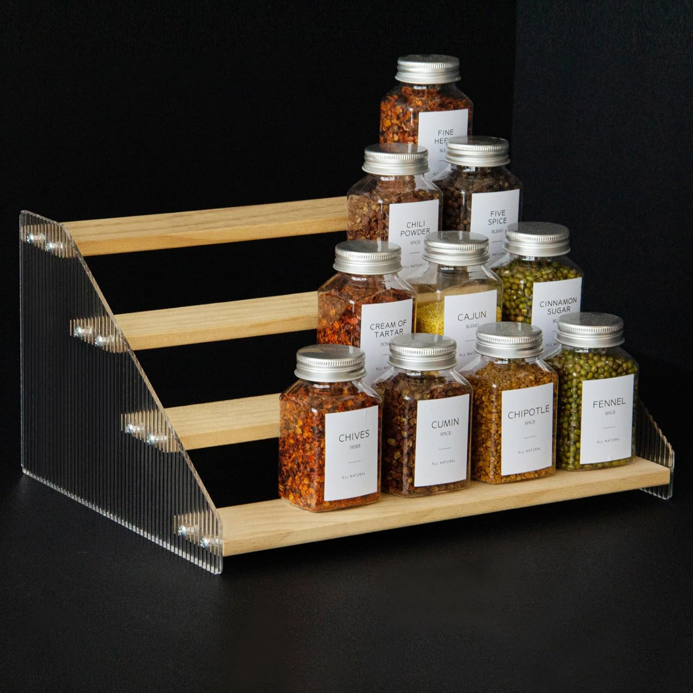
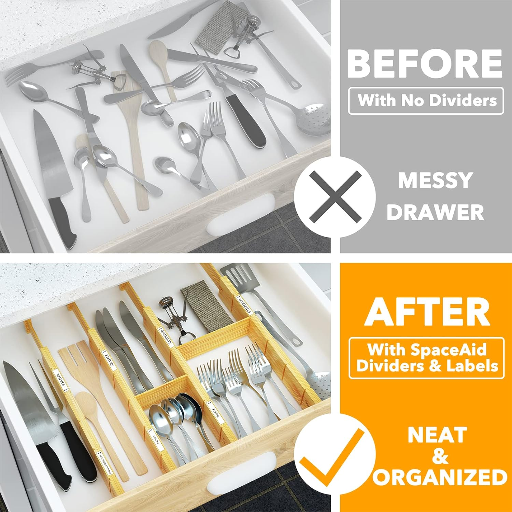
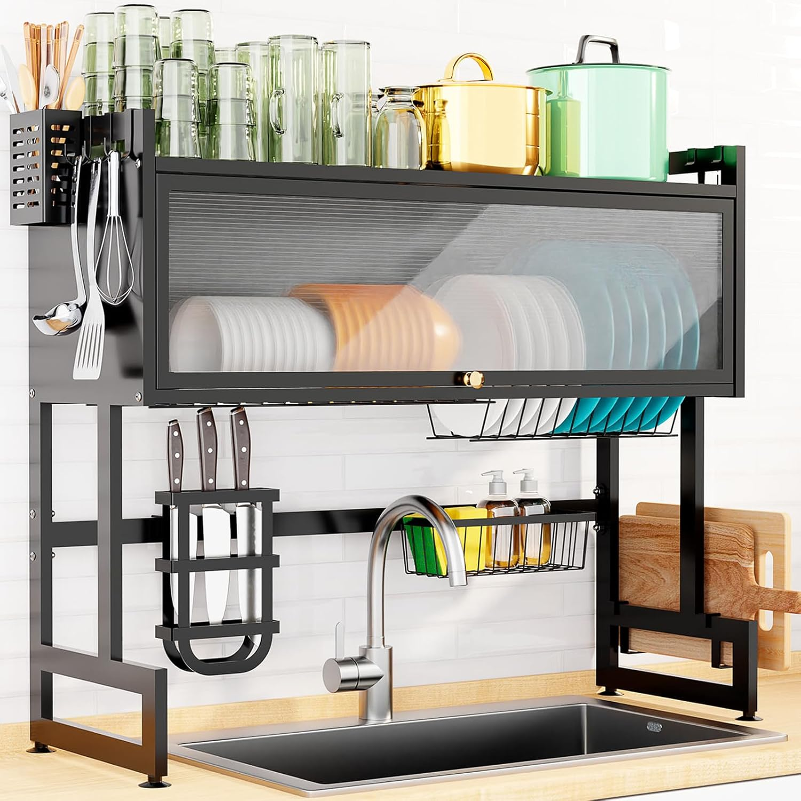
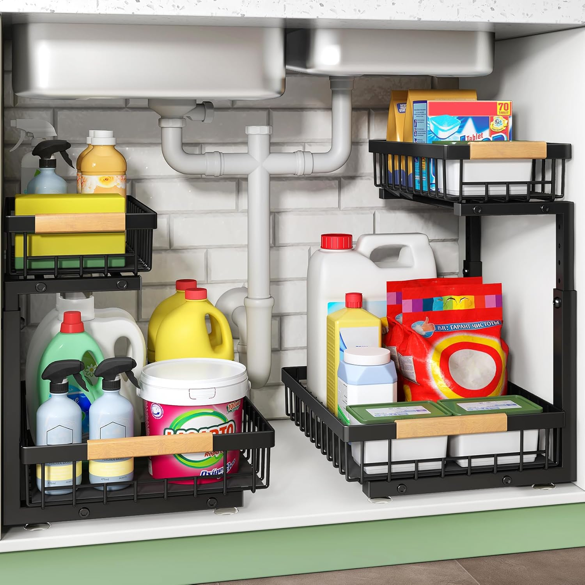
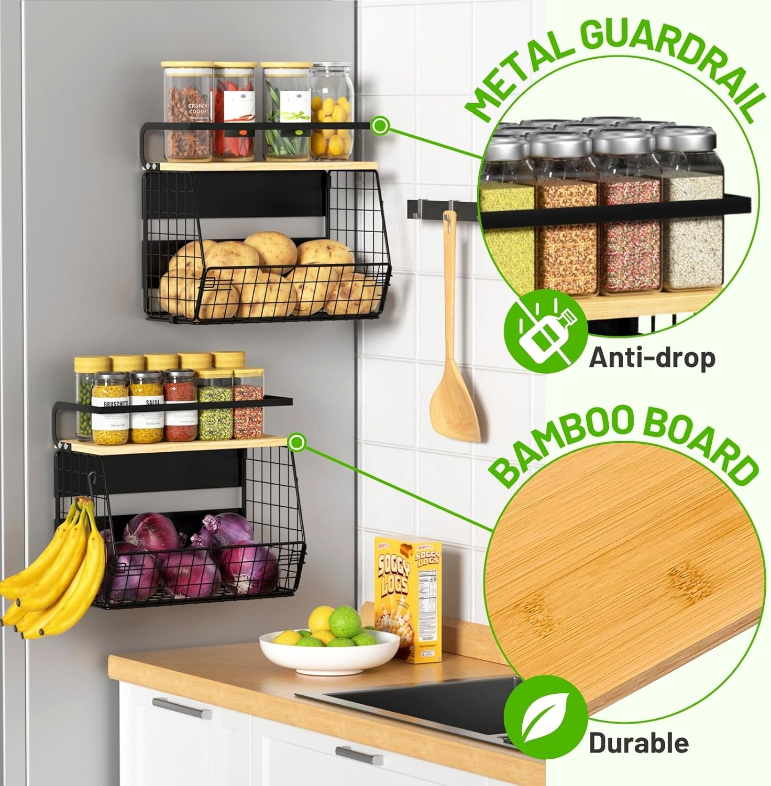
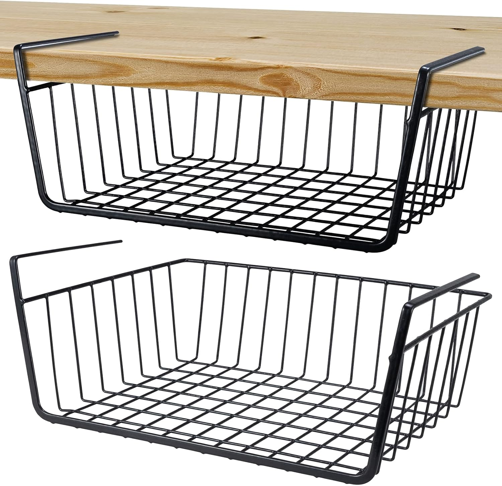
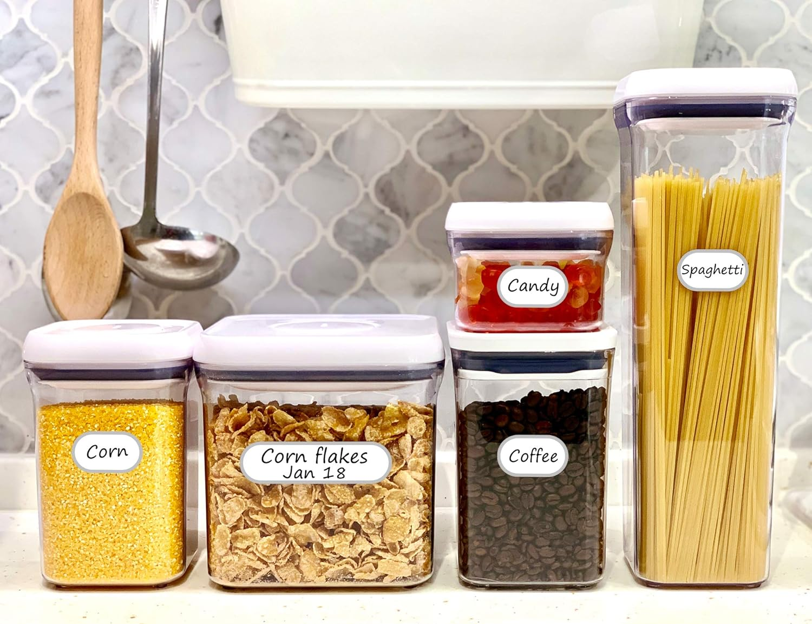

Smart kitchen organizers can make a big difference in small and large kitchens alike. From decluttering counters to creating smoother workflows, these tools offer a cleaner, more efficient cooking experience.

1. Tiered Cabinet Shelf Organizer
The three-level cabinet shelf helps you store spices, cans, or cups vertically — saving valuable shelf space. Great for cabinets that feel deep and chaotic.
2. Expandable Drawer Dividers
Adjustable bamboo dividers keep your utensils, towels, and tools neat and easy to access. They expand to fit most standard drawers and add a clean, tidy look.
3. Over-the-Sink Dish Drying Rack
This space-saving rack fits over your sink and holds plates, bowls, and cutlery while draining directly. Users love the bonus slots for soap and sponge storage.
4. Pull-Out Pantry Baskets
Transform your lower cabinets into a pull-out pantry system. No more crouching and digging — just smooth glides and easy visibility.
5. Magnetic Fridge Rack
A fridge-mounted rack that holds spices, paper towels, or your favorite coffee pods. Strong magnets mean no drilling, no hassle.
6. Under-Shelf Hanging Baskets
Slide hanging wire baskets onto your shelves to store sandwich bags, lids, or snacks. A quick, renter-friendly storage hack that makes use of vertical space.
7. Label Everything
Use waterproof kitchen labels on jars, bins, and containers so everyone knows what goes where. Labels keep your system in place — even after a busy week.
The best organizers are the ones that make your routine smoother without adding stress. Start small, pick a drawer or shelf, and enjoy the simplicity smart tools can bring.
← Back to Home